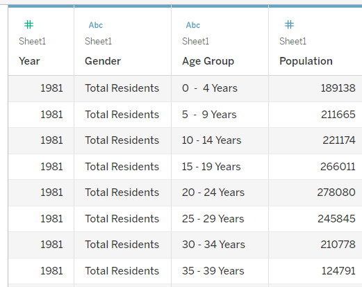
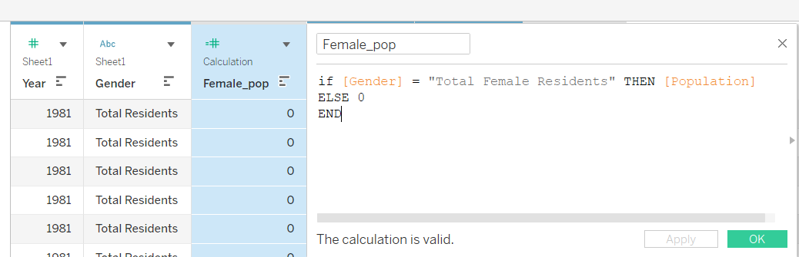
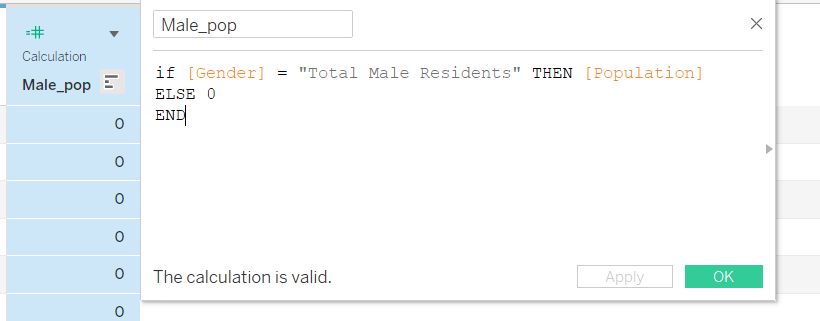
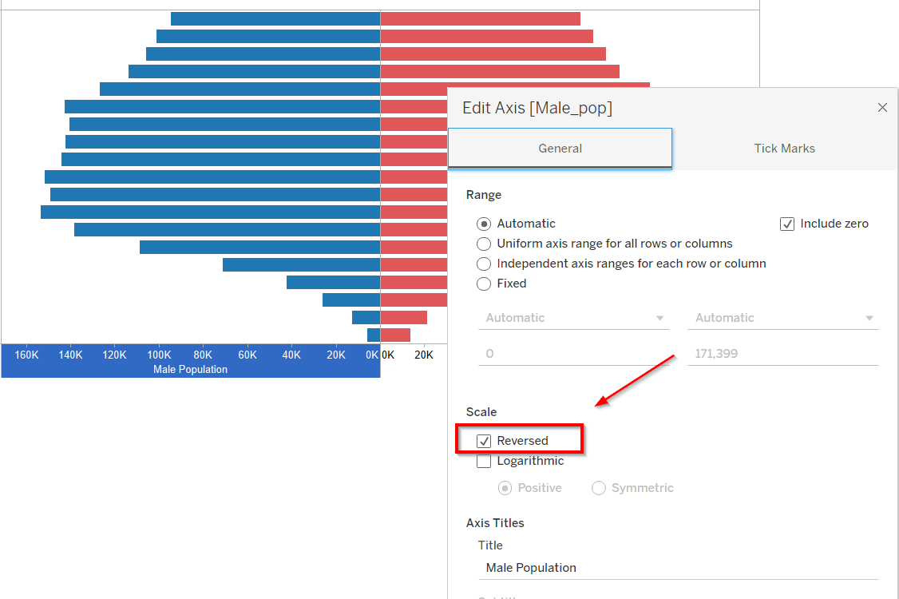
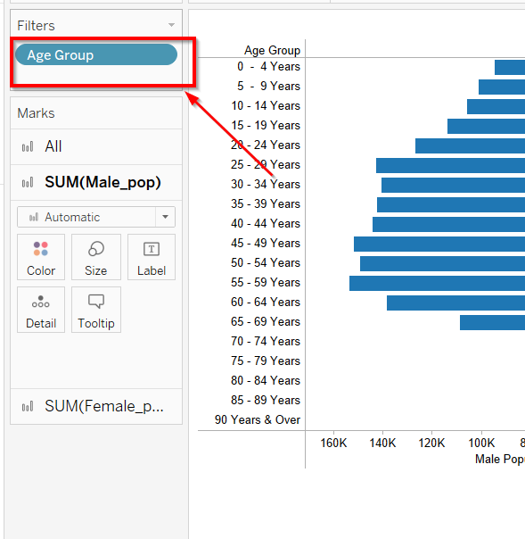
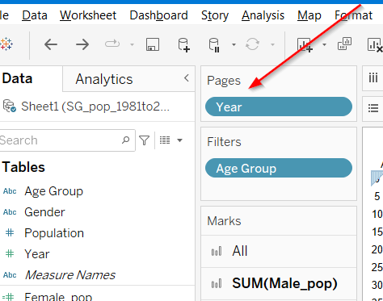
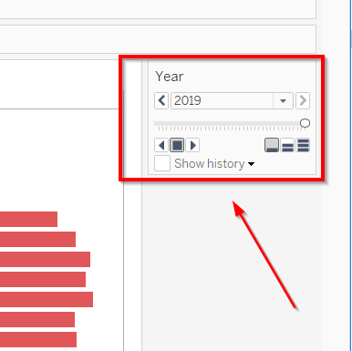
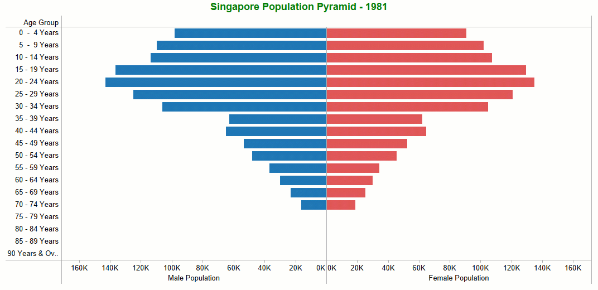

Pyramid Chart has the form of a triangle with lines dividing it into sections. A population pyramid is a graph that shows the distribution of ages across a population divided down the center between male and female members of the population.
In this post, I used the Singapore Population data from data.gov.sg. I truncated the data before 1981 and kept the data from Year 1981 to Year 2019.
I created the charts in the Tableau Desktop and then published them on my Tableau Public website.
I removed the data (before Year 1981) and saved it as a new file in my laptop. Then, I rename the column as below: Year, Gender, Age Group and Population.

I created two calculated fields: Female Population and Male Population.


In the Tableau sheet, add the Male Population and Female Population as the columns and the Age Group as Rows.
Choose blue color for Male Population and red color for Female Population.
Reverse the Male Population Axis as below.

In the Filters pane, filter out the unwanted “Age Groups”.

Add the Year into Pages pane. After that, the “Year” will show up as a Card on the upper right side.


We can use a powerful tool within Tableau: Animation, by running the pages from 1981 to 2019.
